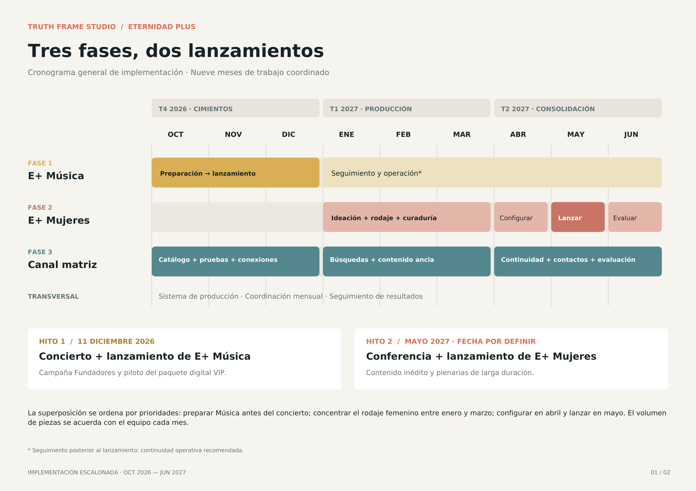

Informe Completo para la Junta Directiva: Crecimiento, Diagnóstico y Plan de Diversificación — Eternidad Plus
Informe de Crecimiento: Andrés Figueroa
Horizonte del plan: Octubre 2026 – Junio 2027
Este informe se entrega junto con la presentación. La Parte I es el informe de crecimiento del canal desde el lanzamiento de Eternidad+ (septiembre de 2024). La Parte II acompaña las 13 láminas de la presentación: el cambio en YouTube, la indexación por inteligencia artificial, el diagnóstico, la oportunidad de diversificar ahora y el plan de ejecución. Al final, un código QR lleva a la presentación en línea.
Suscriptores
Total acumulado del canal.
Suscriptores nuevos (netos)
37,005 ganados y 6,960 perdidos entre el 12 sep 2024 y el 24 oct 2026.
Vistas · 638,908 horas
En el mismo periodo.
37% de todas las vistas del canal desde enero de 2014 (11.9 M) ocurrieron en estos dos años.
Fuente: YouTube Studio · Eternidad+ · exportaciones del 24 de octubre de 2026.
Vistas por mes, en miles. Sep 2024 desde el día 12 y oct 2026 hasta el día 24 (parciales, rayados). Récord diario: 26,086 vistas el 23 de septiembre de 2026.
Récord de la era
Septiembre de 2026, 50% más que el pico anterior (abril de 2025: 244 k).
Trimestre vs. año anterior
Jul–Sep 2026: 840,546 vistas frente a 410,928 en Jul–Sep 2025.
Lectura honesta
Los 12 meses completos (oct–sep): 2.06 M frente a 2.03 M. El salto es reciente.
| Indicador | Dato | Qué significa |
|---|---|---|
| Duración promedio por vista | 10 min 06 s | Videos largos: 11:12 · Shorts: 0:52 |
| Horas de visualización | 638,908 h | El 98% proviene de videos largos |
| Vistas de suscriptores | 20% → 38% | De inicios de 2025 a hoy: la audiencia se vuelve comunidad (duración: suscritos 10:28 · no suscritos 9:57) |
| Covisualización (TV) | 904,565 vistas (20%) | Familias frente al televisor |
| Suscriptores ganados / perdidos | 37,005 / 6,960 | 77 de cada 100 ganados llegan desde la página del video |
| Videos largos vs. Shorts | 82% / 17% de las vistas | Los Shorts aportan solo el 0.9% de las horas: amplían el alcance, no la profundidad |
| Alcance pagado | 675 vistas (0.015%) | Todo el alcance ha sido orgánico |
Fuente: YouTube Studio · 12 sep 2024 – 24 oct 2026 · estado de suscripción, tipo de contenido, origen de las suscripciones y tráfico orgánico/pagado.
| País | % vistas | Vistas | Duración |
|---|---|---|---|
| México | 21% | 930,808 | 10:17 |
| Estados Unidos | 14% | 605,774 | 09:47 |
| Colombia | 9% | 410,775 | 09:17 |
| Argentina | 7% | 330,482 | 11:48 |
| Perú | 7% | 306,048 | 12:14 |
| R. Dominicana | 6% | 278,778 | 08:26 |
| Chile | 6% | 252,647 | 11:40 |
Jul–Sep 2026 vs. 2025: EE. UU. ×2.4 · México ×2.3 · R. Dominicana ×2.8. Todos los mercados principales crecen.
| Fuente de tráfico | % vistas | Duración | CTR |
|---|---|---|---|
| Exploración (Inicio) | 28% | 11:22 | 5.19% |
| Videos sugeridos | 23% | 13:30 | 4.19% |
| Búsqueda de YouTube | 19% | 07:41 | 7.74% |
| Feed de Shorts | 9% | 00:46 | — |
| Externas | 8% | 06:36 | — |
Los sugeridos dan el 23% de las vistas y el 36% de las horas. El Feed de Shorts pasó de 6% a 13% de las vistas (sep 2024–sep 2025 vs. sep 2025–sep 2026); los sugeridos bajaron de 29% a 18%.
Videos publicados por trimestre (incluye Shorts) entre los 500 más vistos del periodo. * Desde el 2 de sep de 2024. ** Parcial, hasta el 24 de oct de 2026. La exportación solo muestra los 500 videos con más vistas: las cifras son un mínimo. Entre septiembre de 2024 y febrero de 2025 fueron 8 videos; Contracultura se estrenó en marzo de 2025.
| Video de la era Eternidad+ | Vistas | Horas | Cuándo |
|---|---|---|---|
| ¿La IA nos está convirtiendo en dioses? Tecnología, fe y orgullo | 113,862 | 7,982 | Sep 2026 · en 5 semanas |
| El Impacto Teológico en América Latina | 83,770 | 18,695 | Oct 2025 |
| El secreto íntimo que destruye matrimonios después de los 60 | 55,155 | 7,851 | Jul 2026 |
| ¿Por qué Dios no te da pareja? La verdad detrás de la soltería | 51,517 | 5,758 | Ago 2026 |
| ¿Quién está moldeando tu forma de pensar? · con Sugel Michelén | 50,829 | 10,220 | May 2025 |
| Diagnosticando la cultura actual · con Miguel Núñez · Contracultura | 49,728 | 9,356 | Mar 2025 |
Los videos publicados desde septiembre de 2024 aportan el 41% de las vistas del periodo (1.83 M).
- Fortaleza: ritmo constante de producción, récord de vistas en septiembre y una audiencia que cada vez se suscribe más.
- Oportunidad 1 · Convertir visitas en comunidad: suscriptores por cada mil vistas: 8.9 (oct 2024 – sep 2025) frente a 4.5 (jul – sep 2026). Llegan más personas, pero se suscriben menos.
- Oportunidad 2 · Empaque y catálogo: los videos nuevos tienen un CTR de 4.4% frente a 5.9% del catálogo anterior, que aún aporta el 34% de las vistas.
Con este punto de partida, Diana presenta la propuesta: cómo convertir este esfuerzo en una red de canales que alcance más hogares.
La Nueva Televisión del Hogar
200 millones de usuarios ven YouTube en televisores mensualmente (60% del tiempo total). En Eternidad+, 456,702 vistas ya son en covisionado familiar en TV con un 57.98% de permanencia.
Autoridad en Inteligencia Artificial
Las tecnológicas migran de los foros de opinión a expertos hablando a cámara. La indexación de YouTube por IA creció +107% en solo 4 meses. Lo que se ordena e indexa hoy es lo que la IA responderá durante la próxima década.
El Cuello de Botella Actual
La convivencia de conciertos, debates teológicos y crianza en un único canal confunde al algoritmo de recomendación, estancando el CTR promedio en 4.86% – 4.9%.
Cómo indexa YouTube la IA, en 3 pasos: (1) un experto habla a cámara, con rigor bíblico y teológico; (2) la IA lo “ve” y lo “escucha”: los modelos son multimodales y aprenden de video; (3) cuando alguien pregunte por fe, familia o doctrina, la IA responde con esa fuente.
| Segmento por Comportamiento (Últimos 365 Días) | Impresiones de Miniatura | Tasa de Clics (CTR) | Visualizaciones | Tiempo de Visualización (Horas) | Duración Media por Vista |
|---|---|---|---|---|---|
| Total Anual Auditado (Oct 2025 – Oct 2026) | 18,609,576 | 4.9% | 2,141,300 (100%) | 290,020.9 h (100%) | 10:43 min |
| Usuarios Nuevos (Descubrimiento) | 9,091,455 | 4.8% | 1,015,294 (47.4%) | 116,483.8 h (40.2%) | 08:49 min |
| Usuarios Ocasionales (Retención Media-Alta) | 5,911,907 | 4.9% | 643,724 (30.1%) | 100,253.4 h (34.6%) | 12:31 min |
| Usuarios Habituales (Comunidad Fiel) | 3,551,829 | 5.0% | 470,095 (22.0%) | 72,227.2 h (24.9%) | 12:32 min |
Ventana: últimos 365 días en la consulta de Studio (octubre de 2026). Con las vistas diarias exportadas, los últimos 365 días al 24 de octubre suman 2.17 M de vistas.
| Periodo (sep – sep) | Vistas | Horas de visualización | Suscriptores nuevos |
|---|---|---|---|
| Sep 2023 – Sep 2024 | 3.17 M | 638.6 k | +30.4 k |
| Sep 2024 – Sep 2025 | 2.22 M | 342.6 k | +19.5 k |
| Sep 2025 – Sep 2026 | 2.15 M | 305.3 k | +11.1 k |
| Variación del primero al último | −32% | −52% | −63% |
- Más videos, pero el mismo alcance: los 420 videos de 2025–26 aportan el 40% de las vistas, igual que los 53 videos de 2022–23 (33%).
- El catálogo antiguo sigue sosteniendo el canal: el 34% de las vistas viene de videos de 2017 a 2023.
- La base de comparación es alta: el concierto J&S Jerez (mayo de 2023) acumula 412,028 vistas y 182,119 horas.
- Señal reciente: septiembre de 2026 fue el mejor mes de la era (367 mil vistas) y el tercer trimestre duplicó al de 2025 (Parte I).
Fuente: YouTube Studio · vistas de los periodos del 1 al 30 de septiembre de cada año; vistas por año de publicación de la exportación de contenido (500 videos principales).
Los datos confirman que el público femenino representa el 54.56% de la audiencia reciente (90 días) y el 51.74% histórico, aportando el 55.28% de todas las horas reproducidas. Asimismo, el 67.46% de la audiencia tiene entre 35 y 64 años, y México junto a EE. UU. superan por más de 5 veces el tráfico local en República Dominicana.
| Rango de Edad / Género | Vistas (%) | Duración Media | % Reprod. | Horas (%) |
|---|---|---|---|---|
| Mujeres (54.56% en 90d) | 51.74% | 11:07 min | 33.88% | 55.28% |
| Hombres (45.44% en 90d) | 48.25% | 09:32 min | 31.56% | 44.71% |
| Entre 18 y 24 años (Jóvenes) | 3.01% | 09:24 min | 28.26% | 2.49% |
| Entre 25 y 34 años | 19.30% | 11:21 min | 30.75% | 19.84% |
| Entre 35 y 44 años (#1) | 26.88% | 11:52 min | 32.11% | 28.90% |
| Entre 45 y 54 años (#2) | 23.75% | 11:14 min | 32.66% | 25.25% |
| Entre 55 y 64 años | 16.83% | 09:54 min | 31.29% | 15.43% |
| 65 años y más | 10.21% | 08:30 min | 30.21% | 8.07% |
| País (Top 8 Mercados) | Vistas Auditadas | Tiempo Reproducción | Duración Promedio |
|---|---|---|---|
| 1. 🇲🇽 México | 394,915 | 57,679.9 h | 10:38 min |
| 2. 🇺🇸 Estados Unidos | 271,557 | 40,910.1 h | 10:43 min |
| 3. 🇨🇴 Colombia | 164,283 | 22,430.3 h | 09:55 min |
| 4. 🇦🇷 Argentina | 138,122 | 23,065.7 h | 12:06 min |
| 5. 🇩🇴 Rep. Dominicana | 125,767 | 14,565.9 h | 08:55 min |
| 6. 🇵🇪 Perú | 122,343 | 21,609.5 h | 12:31 min |
| 7. 🇨🇱 Chile | 103,112 | 17,639.3 h | 12:22 min |
| 8. 🇻🇪 Venezuela + 🇪🇸 España | 117,235 | 13,528.2 h | 08:15 min |
Las tablas de audiencia de las secciones 3 y 4 provienen de las exportaciones de Studio del 22 de septiembre de 2026 (1.88 M de vistas, últimos 365 días a esa fecha).
| Fuente de Tráfico | Vistas | Horas Reprod. | Duración Media | CTR |
|---|---|---|---|---|
| Videos Sugeridos | 373,609 | 100,056.8 h | 16:06 min | 3.99% |
| Exploración (Home) | 499,536 | 83,628.5 h | 12:18 min | 5.28% |
| Búsqueda YouTube | 366,877 | 36,286.7 h | 07:10 min | 7.33% |
| Playlists (Listas) | 40,128 | 11,085.0 h | 16:38 min | 2.25% |
| Feed de Shorts | 237,972 | 1,323.7 h | 00:45 seg | — |
Hallazgo clave: El 96.4% del tiempo de visualización proviene de videos largos. En la pestaña Comunidad, las encuestas movilizan de 300 a 600 votos (ej. 445 votos: 40% Finanzas Bíblicas, 24% Música y Adoración, 23% Cocina y fe).
| Videos Insignia Comprobados | Vistas | Horas / TV | CTR |
|---|---|---|---|
| Concierto J&S Jerez: Grande es tu Fidelidad | 161,848 | 73,562 h (37.9k TV) | 5.19% |
| El Impacto Teológico en América Latina | 77,654 | 17,877 h (+624 susc) | 3.51% |
| Secreto íntimo después de los 60 (Ep 26) | 54,704 | 7,802 h (24.3k TV) | 5.71% |
| ¿Qué son los dones espirituales? | 52,777 | 3,078 h (+344 susc) | 8.60% |
| ¿Por qué Dios no te da pareja? Soltería | 49,611 | 5,512 h (50.6k TV #1) | 4.95% |
| ¿Qué son las 5 solas? / Unión libre | 14,650 | 498 h | 10.49% / 10.23% |
Audiencia A · Teología y hombres
Cosmovisión, apologética y ética.
Audiencia B · Música y conciertos
Consumo inmersivo en TV. El video #1 del canal es un concierto.
Audiencia C · Mujeres y familia
El 54.56% de la audiencia reciente. Crianza y matrimonio.
Efecto en el algoritmo: al mezclar señales de públicos distintos en un mismo canal, YouTube no sabe a quién recomendar cada video y se diluye el alcance orgánico. La prueba en los datos: el CTR del canal es 4.9%, pero en los temas femeninos y de pareja sube a 9.5% (8.2% a 9.5%): cuando el contenido encuentra a su público, el clic casi se duplica.
| Por qué ahora | Dato | Lectura |
|---|---|---|
| 1 · Tráfico | Q4 | El último trimestre es el pico orgánico del año: hay que optimizar ahora. |
| 2 · Pantalla | 60% | La TV ya es el estándar; los conciertos y la formación profunda de E+ ya se ven en televisores. |
| 3 · Inteligencia artificial | +107% | La IA está indexando ya: quien ordene su catálogo primero será la fuente de autoridad. |
| 4 · Activos listos | 2 eventos | Concierto (11 de diciembre de 2026) y conferencia (mayo de 2027): plataformas de lanzamiento listas. |
Audiencia fiel, contenido de calidad y cambios de plataforma a favor: esa combinación no estará abierta para siempre.
1. Eternidad+ (Canal Matriz)
- Enfoque: Cosmovisión, Apologética, Ética y liderazgo masculino.
- Anclas: Hombres de Verdad (1er y 3er jueves) y Contracultura (2do y 4to viernes).
- Vacíos a cubrir (Martes): Finanzas Bíblicas (40% en encuesta), Salud Mental en el creyente, Apologética y Tecnología/IA.
2. E+ Música (Dic 2026)
- Enfoque: Sesiones de adoración en TV y formación ministerial del músico.
- Hito Ancla (11 Dic 2026): Transmisión del Concierto en Vivo completo en el nuevo canal.
- Estrategia: Fragmentar conciertos históricos en canciones individuales + sesiones acústicas con letra.
3. E+ Mujeres (Mayo 2027)
- Enfoque: Vida cotidiana, matrimonio, crianza y discipulado para el 54.56% de la audiencia.
- Hito Ancla (Mayo 2027): Conferencia Presencial de Mujeres + estreno en bloque ("Drop") + meta de 8,000 horas.
- Curaduría: Migración estratégica de series históricas como La Mesa.
Proyección Fase Futura — Incubadora E+ Jóvenes (18–24 años · Hoy 3.01%): No se comprometerán recursos de estudio en formato largo a ciegas; se operará un embudo de descubrimiento basado en YouTube Shorts → Video Largo → Oferta.

| Mes | Prioridad | Acciones Principales Coordinadas | Entregable / Hito Verificable |
|---|---|---|---|
| Oct 2026 | Auditoría y arquitectura | Música: apertura técnica y selección de fragmentos. Matriz: listas transversales y pruebas de miniaturas (9/sem). | Diagnóstico, estructura y catálogo priorizado. |
| Nov 2026 | Preparación y conexiones | Música: carga de contenido, pantallas finales y diseño paquete VIP. Equipo: flujo de producción por lotes. | Canal Música listo y flujo acordado. |
| Dic 2026 | HITO 1 · El Concierto | 11 de diciembre: transmisión del concierto, anuncio E+ Música, campaña Fundadores y piloto de paquete descargable. | Lanzamiento público E+ Música y piloto comercial. |
| Ene 2027 | Ideación y producción | Mujeres: definición de formatos e inicio de grabaciones sin publicar (Dark Launch). Matriz: análisis de búsquedas. | Formatos definidos y primeras grabaciones. |
| Feb 2027 | Contenido ancla | Matriz: rodaje nueva temporada (Cold Open optimizado) y colaboraciones con talentos para presentar E+ Mujeres. | Nueva temporada y piezas de conexión. |
| Mar 2027 | Curaduría histórica | Mujeres: cierre de rodaje previsto. Evaluación de La Mesa y ruta de migración como contenido semilla. | Banco de episodios listo y decisión sobre La Mesa. |
| Abr 2027 | Preparación 2do canal | Mujeres: apertura técnica, identidad visual, metadatos y carga privada de contenido semilla. | Canal E+ Mujeres configurado y listo. |
| May 2027 | HITO 2 · Conferencia | Grabación de plenarias, revelación oficial de E+ Mujeres al cierre del evento y publicación gratuita de larga duración. | Lanzamiento E+ Mujeres y carrera a 8,000 horas. |
| Jun 2027 | Evaluación y continuidad | Matriz: captación de correos. Junta Directiva: evaluación integral de audiencia, operación e ingresos. | Informe final de 9 meses y decisión siguiente ciclo. |
Los 4 Pilares en el Canal Matriz (Desde Q4 2026)
- Pilar A · Empaque y CTR (9 miniaturas/semana): Renovación de 3 videos semanales (3 variaciones A/B/C por video), listas transversales y recorte de intros en el editor nativo de YouTube.
- Pilar B · Cold Open (Primeros 15s): Ganchos validados por datos para asegurar la retención en el primer minuto.
- Pilar C · Cross-Pollination: Shorts de alta conversión conectados al video largo y transferencia de autoridad hacia E+ Mujeres.
- Pilar D · Soberanía de Datos: Llamados a la acción para convertir vistas anónimas en base propia de correos electrónicos.
Flujo Mensual en 4 Lotes + Parrilla (Horarios Pico)
- Semana 1 (Preproducción): Temas por búsqueda, guiones y miniaturas definidas antes de grabar.
- Semana 2 (Rodaje): Grabación en bloques + fotografía dedicada en set para miniaturas.
- Semana 3 (Edición): Episodios largos, 3–5 Shorts por video y diseño A/B/C.
- Semana 4 (Programación): Carga SEO y estrenos sincronizados:
• Martes 10:30 AM: Eternidad+ Matriz (Ideación 1 y 2)
• Jueves 10:30 AM / 4:00 PM: E+ Mujeres (10:30 AM) y Hombres de Verdad (4:00 PM Sem 1 y 3)
• Viernes 10:30 AM: Contracultura (Sem 2 y 4) y E+ Música (Sem 1 y 2)
Tier 1 ($9 – $17 USD)
Materiales de Baja Fricción: Workbooks en PDF, guías devocionales y manuales prácticos en la primera línea de descripción y comentario fijado. Piloto: 11 de Diciembre 2026 en el Concierto + Campaña "Fundadores".
Tier 2 ($27 – $47 USD)
Formación Profunda: Masterclasses y cursos asincrónicos grabados en los dos estudios actuales sobre los temas de mayor demanda (Finanzas Bíblicas, Matrimonio y Crianza).
Tier 3 ($97 – $149 USD)
Experiencias Globales: "Tickets Virtuales" de acceso internacional para que la audiencia de EE. UU. (271k vistas) y México (394k vistas) asista digitalmente al Concierto y la Conferencia.
Articulación Operativa (Sin sobrecargar al equipo interno)
- Dirección General (E+): Toma decisiones estratégicas sobre reportes ejecutivos basados en datos.
- Coordinación e Inteligencia de Datos (Diana Cardona): Análisis de búsquedas, formatos, sistema de producción, tácticas de Growth y soberanía de datos.
- Especialista SEO Visual Externo (Incluido): Provisto y coordinado por Diana para producir las 9 miniaturas semanales (pruebas A/B/C) basadas en datos, sin añadir carga al diseñador interno.
- Equipo Técnico Interno (E+): Grabación, iluminación, edición y línea gráfica.
Decisiones que se someten a la Junta
- Aprobar la evolución a una red de 3 canales especializados.
- Confirmar el concierto del 11 de diciembre de 2026 como hito de lanzamiento de E+ Música.
- Fijar la evaluación integral de audiencia, operación e ingresos para junio de 2027.
Oct 2026 – Jun 2027 · Construir la red
E+ Música y E+ Mujeres en marcha, canal matriz renovado y primera prueba de autosostenibilidad.
Junio 2027 · Medir y decidir
Revisión de retención y crecimiento. Equipo técnico con autonomía total, o continuidad del acompañamiento.
Más allá · Nuevas generaciones
E+ Jóvenes y Niños con embudo Short → Video Largo → Oferta, a partir de los segmentos detectados en los datos.
Más canales → más horas de visualización → recursos propios → más alcance para la misión.
La tecnología y las plataformas son solo los vehículos. La misión permanece inalterable.
Estamos ante una oportunidad única: que el mensaje del evangelio llegue a los hogares de hoy y quede disponible para las próximas generaciones. Es una responsabilidad de mayordomía: construir la infraestructura que transforme vidas, edifique familias y alcance hogares por generaciones.
Escanea el código para volver a la presentación completa.
truthframestudio.com/proyectos/eternidad-plus
Mayordomía · Legado · Permanencia